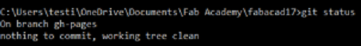
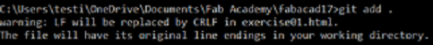
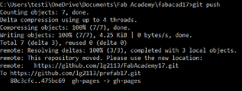

Exercise 1- Principles & Practices, Project Management
Sublime Text 3 and Notepad ++
I had some web programming background and I am thankful for that as it would be easier for me to pull through this exercise. I was a Notepad++ user back in the days, it was simple and free to use.
Ahh, the good old days...
I was also introduced to Sublime Text 3 by Dorville and Steven Chew, my Local Gurus. I was quite impressed by the plugin, Emmet, it helped me in autocompleting the HTML Code. I felt that it is useful but at times it is quite annoying as I have a habit to close the Tags on myself. But it is never too much to complain if there is a helping hand! :)
"Everything is awesome!" - Emmet, Lego Movie
Although Sublime Text 3 is free, but it often prompts to pay/donate as compared to Notepad ++ which is really Free! I will be using Sublime Text 3 for this phase of Fab Academy to take this opportunity to appreciate this software!
NodeJS + BrowserSync
Yikes! This is my first time hearing NodeJS! Setup is easy, but to execute it is another!
Browsersync is an add on for NodeJS, I had to use the Command Prompt and run the code, luckily Steven shared with us the code and I had to save it as a sticky note on my desktop!
It works similarly as WAMP (Windows Apache MySQL & PHP), but it is used to "preview" my work locally before it goes "live". And it instantly refreshes my page upon saving the file, how cool is that!
Code: browser-sync start --server --directory --files "**/*"
Git Hub
Now, Git is relatively new to me, yes I've heard of it, but to use it, no. This is my first time handling and using Git. I am also trying to understand the benefit of it besides being able to share things with the community and to use it in the future as my daily driver.

Checking the status of the github!

Adding the update files to Github

Committing of files

Pushing of files to Github!
Same as NodeJS, I will need to note it down for further reference!
To add multi files - git add file1 file 2 To add a directory – git add directoryname To remove file - git rm (result remove from Git and local file system) To stop tracking a file but still keep local copy – git rm –cached [filename] Once files ready git commit –m “put your commens here!” To check status - git status To add push code – git push --all or git push